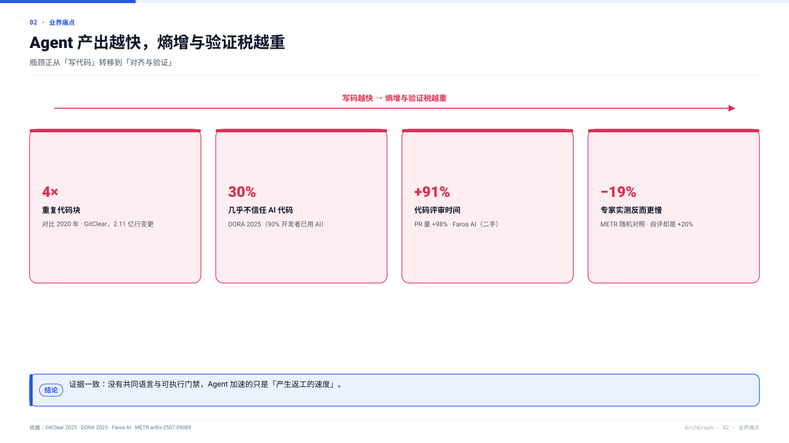
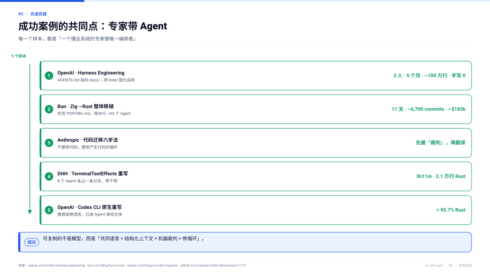
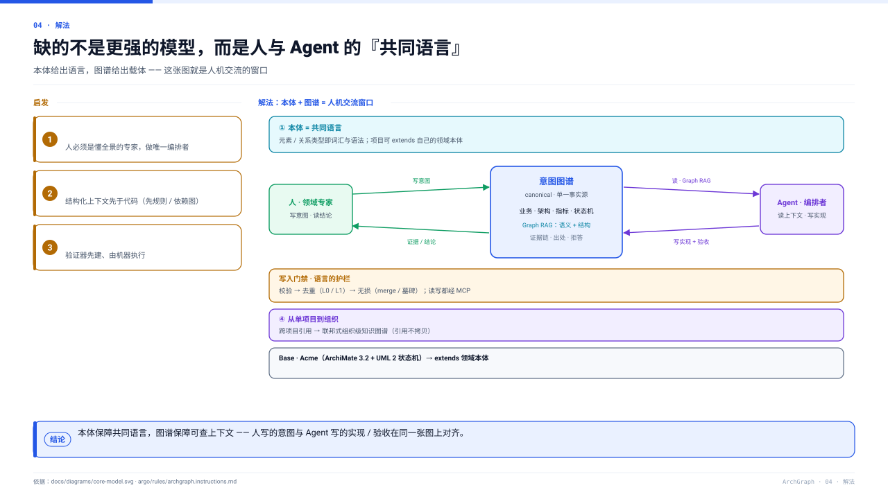
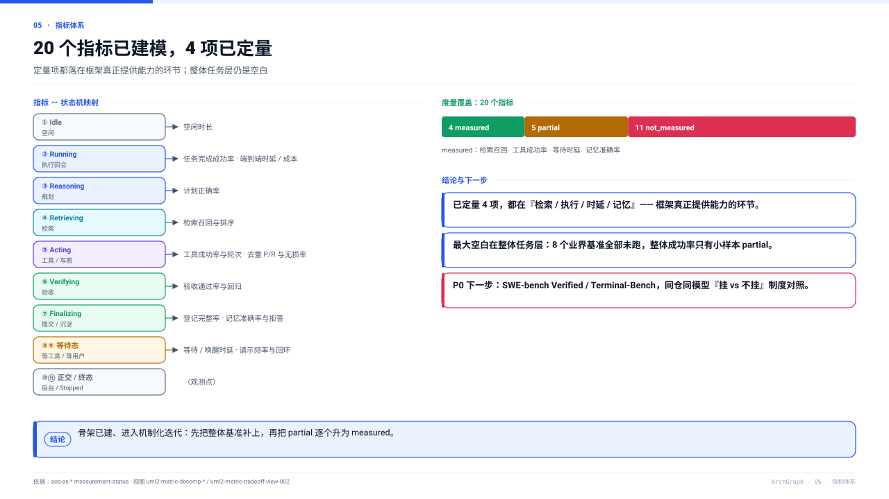
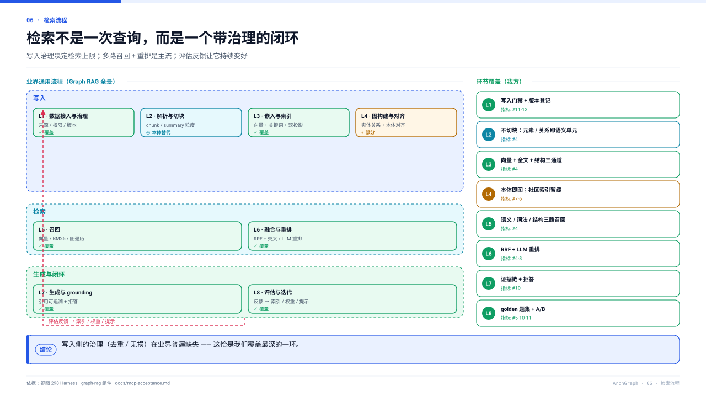
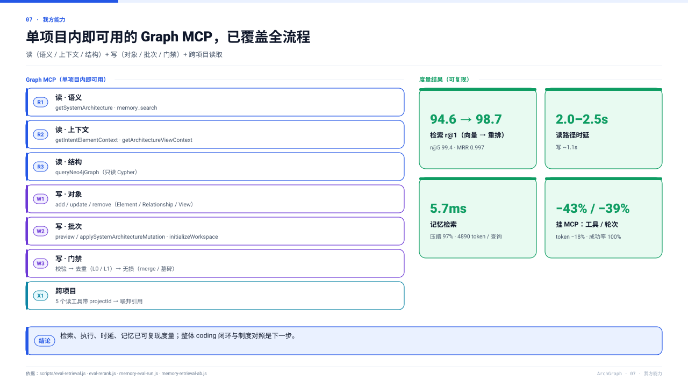
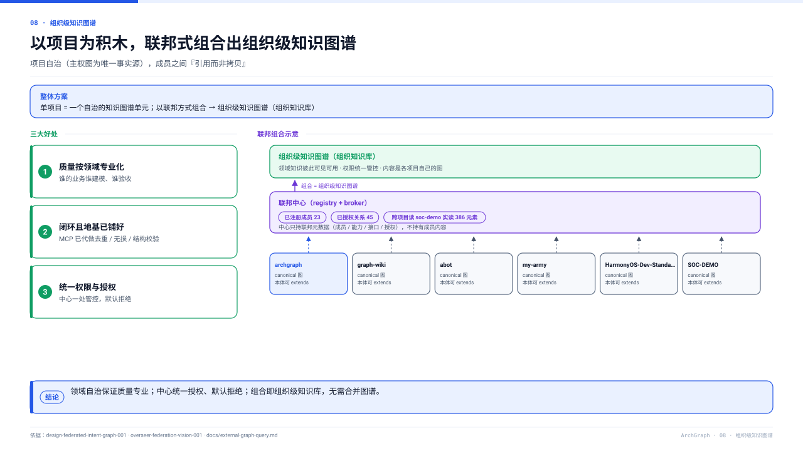
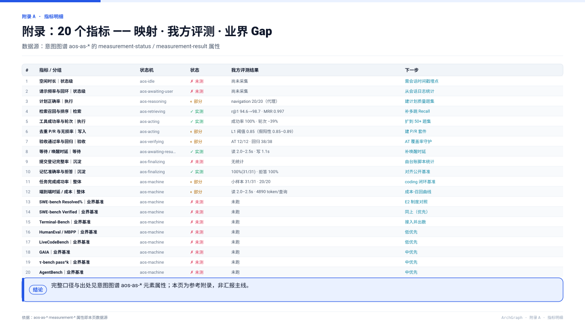

8 页正文 + 1 页附录：业务全景 → 痛点 / 实践 → 解法 → 指标 → 检索 → 能力 → 组织级
『我方』数字取自意图图谱 aos-as-*（measurement-status / measurement-result）；『业界』数字为公开来源快照并标注出处，非我方实测。排版原则：一页一个结论，图为主、字为辅。 editable diagrams: docs/ppt/excalidraw/*.excalidraw







